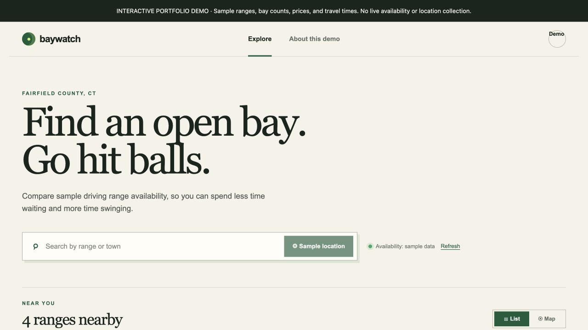

Discovery · Product interface
Baywatch Golf Range Finder
Compare practice facilities by bay availability, distance, and amenities. Try filters, search, and a schematic map in a standalone preview.
Fixed sample data; no live availability or location collection.